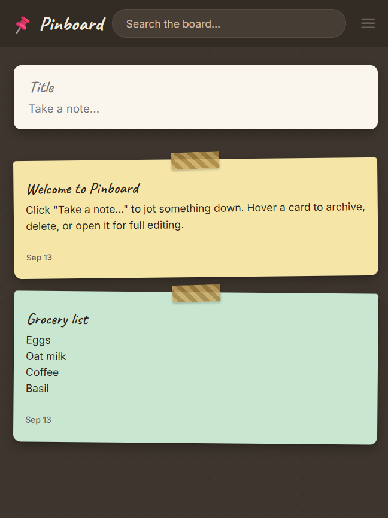
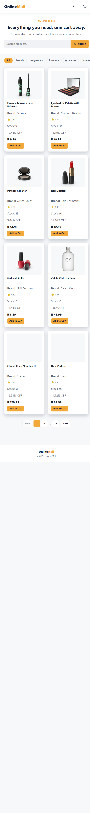
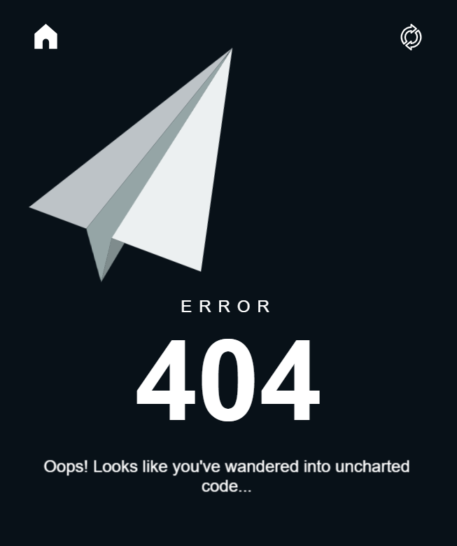
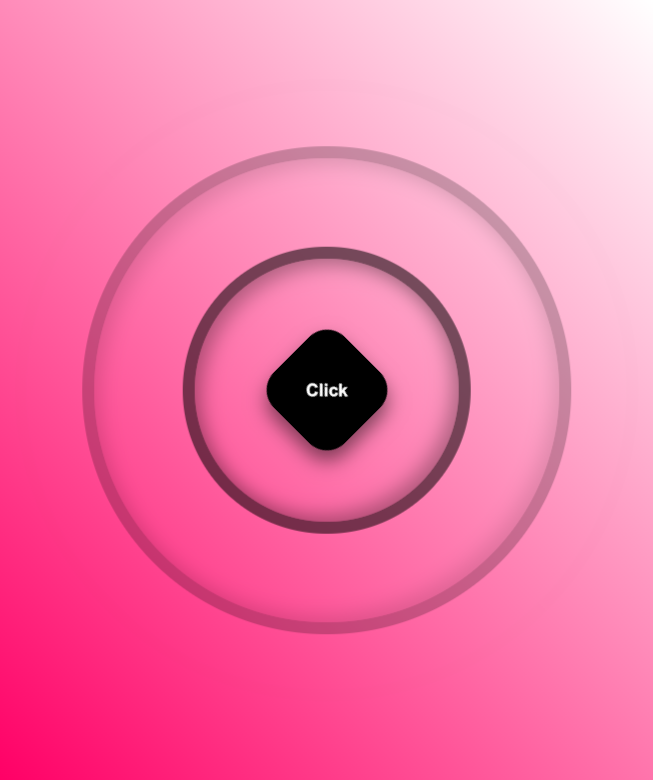

Airbnb Clone
Visit
JavaScript | CSS | Backend
A full-stack Airbnb-inspired platform organized into separate guest frontend, backend, and admin applications.

A collection of everything I've built and deployed so far — from a full-stack Airbnb architecture and Firebase e-commerce app to React builds, API integrations, browser state work, and a team capstone project. Each case study explains the technical problem, the trade-off, and what I would improve next.

DEPLOYED PROJECTS
Click a project to open its full case study — the problem, my approach, trade-offs, and the links.
JavaScript | CSS | Backend
A full-stack Airbnb-inspired platform organized into separate guest frontend, backend, and admin applications.
HTML | CSS | JavaScript | Firebase
A full e-commerce app for a fictional streetwear brand with Firebase Authentication, a real product catalog, and a persistent cart.

HTML | CSS | JavaScript
A responsive note board with search, editing, colors, archive and restore flows, delete undo, and localStorage persistence.

React | Vite | Open Library API
A book search app built on the Open Library API, with proper loading and error states instead of assuming every request succeeds.

React | Context API | Vite
A group-built React shopping app with shared product and cart state, search, category filtering, pagination, and a complete checkout flow.

 iHub Website Prototype
iHub Website Prototype
HTML | CSS | JavaScript | Git
A responsive multi-page website built by a six-person team, with communication, Git workflow, and pull-request coordination managed by me.
 Google Keep Clone
Google Keep Clone
React | JavaScript | Vite
A React rebuild of Google Keep with a masonry note grid, labels, dark mode, and drag-and-drop reordering.

 Animated 404 Error Page
Animated 404 Error Page
HTML | CSS | JavaScript
A responsive group project turning a standard 404 state into an animated experience with a flying paper plane and glowing typography.

HTML | CSS
A collaborative CSS interaction project exploring a wave-style button animation with a clean, responsive presentation.

 Twitter/X Clone
Twitter/X Clone
HTML | CSS | JavaScript
A Twitter/X feed clone with real interactivity — composing posts and updating state live in the browser.

HTML | CSS | JavaScript
An interactive quiz with instant feedback, built to focus purely on JavaScript scoring logic rather than layout.

HTML | CSS | JavaScript
A responsive YouTube-inspired homepage with search, sidebar navigation, category filters, video cards, theme switching, and interactive browser state.